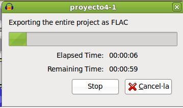

4.1. Trabajando con nuestro proyecto
1. Abre el Proyecto1.aup que has generado en el apartado 2.1 de este tema. Observa que tiene la canción importada y una zona de silencio, básicamente, en la línea de tiempo de la pista 1.
2. Agrega una pista de tiempo. Observa que se ubica en la zona superior de la línea de pistas (encima de la pista anterior del proyecto).
3. Agrega una pista de Etiqueta. Modifica el nombre por canción 1 y la mueves encima de la pista de la canción del proyecto y debajo de la pista de tiempo.
4. Importa una nueva canción al proyecto: Fichero / Importar / Audio (File / Import / Audio). Utiliza otro fichero del que dispongas.
5. Añade una Etiqueta de pista y denomina dicha pista como canción 2 y la ubicas encima de la última canción importada. El resultado debe ser similar al que mostramos.
6. Anulamos el sonido de la canción 1. Tenemos dos opciones: hacer clic en el botón mute de la canción que deseamos silenciar o seleccionar solo en la canción que deseamos que se reproduzca. En ambos casos, la canción silenciada aparece en un color opaco.
7. Guarda el nuevo proyecto como Proyecto 4-1.aup
8 . Exporta el proyecto como proyecto1-4.flac

9. Reproduce el fichero resultante en cualquier reproductor multimedia de nuestro ordenador. Observa que sólo se reproduce la canción que no hemos silenciado.
Jo.R.C.A. 2004 - 2011

Edición de Audio y Video con Software Libre by José Ramón Cerdeira Alonso is licensed under a Creative Commons Reconocimiento-No comercial-Compartir bajo la misma licencia 3.0 España License